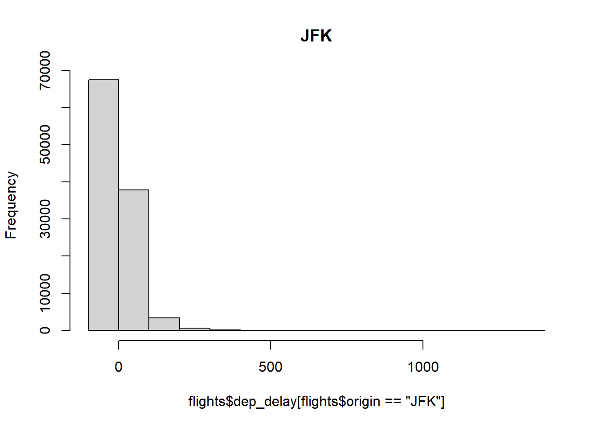
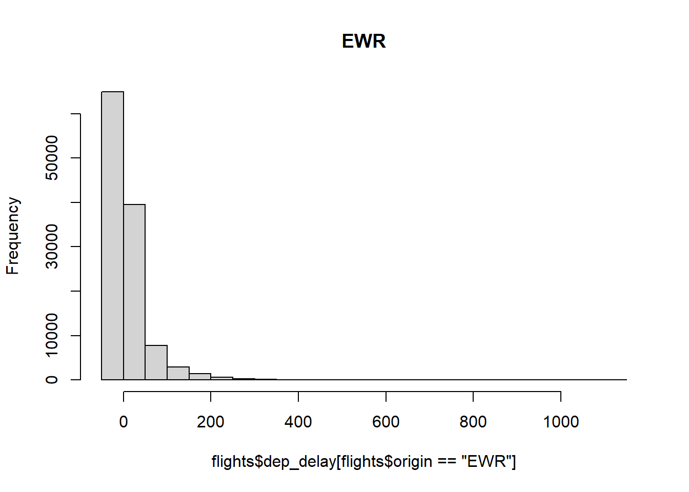
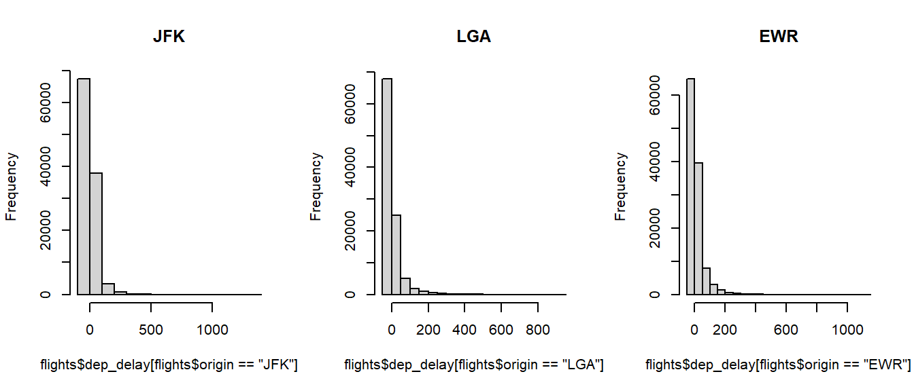

Capítulo 2 R para não-programadores
Este capítulo foi escrito baseado em Cotton (2013) e o conteúdo apresentado aqui foi usado como base para o minicurso “R para não-programadores”.
2.1 Controle de fluxo e repetição
Por algum motivo particular, você pode querer executar ou não um determinado trecho do seu código. Também, pode querer que um trecho seja executado repetidas vezes.
2.1.1 if e else
A maneira mais simples de controlar o fluxo de execução é adicionando um valor lógico e executando o comando if.
## Isso é verdadeiro!## O valor está faltando!if(runif(1) > 0.5) message("Essa mensagem ocorre com 50% de chance.")
x <- 3
if(x > 2) {
y <- 2 * x
z <- 3 * y
}Para executar um comando caso a condição do if não seja verdadeira, utilize o else.
if(FALSE)
{
message("Não será executado...")
} else #o else deve estar na mesma linha que fecha as chaves
{
message("mas este será.")
}## mas este será.Como R é uma linguagem vetorizada, é possível vetorizar estruturas de controle de fluxo, através da função ifelse.
Esta função necessita de três argumentos: o primeiro é um vetor de valor lógico, o segundo contém os valores que serão retornados quando a condição lógica é verdadeira (TRUE), o terceiro contem os valores que serão retornados quando a condição é falsa (FALSE).
set.seed(123)
numeros <- sample(1:100, 10)
maiores_50 <- ifelse(numeros > 50, "Maior que 50", "Menor ou igual a 50")
maiores_50 <- factor(maiores_50)
table(maiores_50)## maiores_50
## Maior que 50 Menor ou igual a 50
## 4 62.1.2 Estruturas de repetição
2.1.2.1 while
O while primeiramente checa a condição e, caso verdadeira, a executa.
No exemplo abaixo, o while será executado somente se acao for diferente de “Descansar”.
acoes <- c( "Aprender a programar em R",
"Fazer um café",
"Assistir um filme",
"Descansar")
acao <- sample(acoes, 1)
print(acao)## [1] "Fazer um café"## [1] "Assistir um filme"
## [1] "Descansar"2.1.2.2 for
É usado quando se sabe exatamente quantas vezes o trecho de código deverá ser repetido.
O for aceita uma variável iterativa bem como um vetor.
O loop é repetido, dando ao iterador cada elemento do vetor por vez.
O caso mais simples é um vetor contendo inteiros.
## [1] "j = 1"
## [1] "j = 4"
## [1] "j = 9"
## [1] "j = 16"
## [1] "j = 25"## [1] "The month of January"
## [1] "The month of February"
## [1] "The month of March"
## [1] "The month of April"
## [1] "The month of May"
## [1] "The month of June"
## [1] "The month of July"
## [1] "The month of August"
## [1] "The month of September"
## [1] "The month of October"
## [1] "The month of November"
## [1] "The month of December"No exemplo abaixo, sorteamos 10 números entre 1 e 100 e, para cada número, se ele for par, calculamos o quadrado, se for impar, somamos 1.
set.seed(2)
numeros <- sample(1:100, 10)
resultado <- numeric(length(numeros))
for(i in 1:length(numeros)) {
if(numeros[i] %% 2 == 0)
resultado[i] <- numeros[i]^2
else
resultado[i] <- numeros[i]+1
}
rbind(numeros, resultado)## [,1] [,2] [,3] [,4] [,5] [,6] [,7] [,8] [,9] [,10]
## numeros 85 79 70 6 32 8 17 93 81 76
## resultado 86 80 4900 36 1024 64 18 94 82 5776Uma alternativa é usar a função ifelse para fazer a mesma operação acima.
## [1] 86 80 4900 36 1024 64 18 94 82 57762.2 Funções
Os tipos e estruturas de variáveis são importantes para armazenamento de dados, funções nos permitem processar os dados.
2.2.0.0.1 Criando e chamando funções
Uma função é criada de maneira parecida com a criação de variáveis, atribuindo um nome à função.
Aqui, hipotenusa é o nome da função criada, x e y são os argumentos e o conteúdo entre chaves é chamado de corpo da função.
hipotenusa(3, 4) #sem nomear, os parametros sao considerados seguindo a ordem de definicao da funcao## [1] 5## [1] 25Pode-se definir valores padrão para argumentos de uma função.
Na função abaixo, que calcula a potenciação, caso exp não seja definido, a função calculará o quadrado do número dado.
## [1] 100## [1] 1000## [1] 1 4 9 16 25 36 49 64 81 100 NA2.3 Lista de exercicios
- O comando abaixo gera amostras aleatórias seguindo a distribuição binomial para simular o lançamento de 100 moeda.
Considere que 0 represente “cara” e 1 represente “coroa.” Crie uma variavel para armazenar os lançamentos como um fator contendo os níveis “cara” e “coroa”.
- Para fins de exemplo, neste exercício considere apenas uma amostra de 1000 linhas dos dados armazenados no dataframe
flightsdo pacotenycflights.
## Warning: package 'nycflights13' was built under R version 4.2.3De acordo com a descrição do mesmo (veja
?flights), a colunadistanceestá registrada em milhas. Crie uma função que receba como argumento um número em milhas e converta-o para kilometros (para um resultado aproximado, multiplique o valor de comprimento por \(1{,}609\)). Em seguida, crie um novo dataframe,flights2em que sua coluna distance esteja representada em km.Crie uma sequencia de comandos utilizando a estrutura
forpara classificar cada uma das distâncias obtidas no item anterior em “curta distância” (até 500km), “média distância” (entre 500km e 2000km) e “longa distância” (mais que 2000km). Armazene o resultado obtido em uma nova coluna no datafrarmeflights. Transforme essa coluna em fator.
2.4 Importação e manupulação de bases de dados
O tipo de dados mais comum de ser importado para o R são aqueles que são armazenadas em planilhas.
Nesta aula, vamos trabalhar com os dados contidos na biblioteca nycflights13, porém, vamos conosiderar a versão dos dados salvos em arquivos .csv.
Para importar dados do tipo .csv (valores separados por vírgula), utilize o comando abaixo.
## [1] "data.frame"## [1] "data.frame"Veja a seguinr os comandos para analisar a estrutura dos dados e obter uma descrição do tipo de cada coluna presente na base.
## 'data.frame': 336776 obs. of 20 variables:
## $ X : int 1 2 3 4 5 6 7 8 9 10 ...
## $ year : int 2013 2013 2013 2013 2013 2013 2013 2013 2013 2013 ...
## $ month : int 1 1 1 1 1 1 1 1 1 1 ...
## $ day : int 1 1 1 1 1 1 1 1 1 1 ...
## $ dep_time : int 517 533 542 544 554 554 555 557 557 558 ...
## $ sched_dep_time: int 515 529 540 545 600 558 600 600 600 600 ...
## $ dep_delay : int 2 4 2 -1 -6 -4 -5 -3 -3 -2 ...
## $ arr_time : int 830 850 923 1004 812 740 913 709 838 753 ...
## $ sched_arr_time: int 819 830 850 1022 837 728 854 723 846 745 ...
## $ arr_delay : int 11 20 33 -18 -25 12 19 -14 -8 8 ...
## $ carrier : chr "UA" "UA" "AA" "B6" ...
## $ flight : int 1545 1714 1141 725 461 1696 507 5708 79 301 ...
## $ tailnum : chr "N14228" "N24211" "N619AA" "N804JB" ...
## $ origin : chr "EWR" "LGA" "JFK" "JFK" ...
## $ dest : chr "IAH" "IAH" "MIA" "BQN" ...
## $ air_time : int 227 227 160 183 116 150 158 53 140 138 ...
## $ distance : int 1400 1416 1089 1576 762 719 1065 229 944 733 ...
## $ hour : int 5 5 5 5 6 5 6 6 6 6 ...
## $ minute : int 15 29 40 45 0 58 0 0 0 0 ...
## $ time_hour : chr "2013-01-01 05:00:00" "2013-01-01 05:00:00" "2013-01-01 05:00:00" "2013-01-01 05:00:00" ...## 'data.frame': 1458 obs. of 9 variables:
## $ X : int 1 2 3 4 5 6 7 8 9 10 ...
## $ faa : chr "04G" "06A" "06C" "06N" ...
## $ name : chr "Lansdowne Airport" "Moton Field Municipal Airport" "Schaumburg Regional" "Randall Airport" ...
## $ lat : num 41.1 32.5 42 41.4 31.1 ...
## $ lon : num -80.6 -85.7 -88.1 -74.4 -81.4 ...
## $ alt : int 1044 264 801 523 11 1593 730 492 1000 108 ...
## $ tz : int -5 -6 -6 -5 -5 -5 -5 -5 -5 -8 ...
## $ dst : chr "A" "A" "A" "A" ...
## $ tzone: chr "America/New_York" "America/Chicago" "America/Chicago" "America/New_York" ...Frequentemente, você deverá alterar o tipo de alguma(s) coluna(s), como, por exemplo, para tratar dados do tipo fator, caracteres e datas.
Nos dados armazenados em flights, podemos converter as colunas carrier, orign e dest para fator.
flights$carrier <- as.factor(flights$carrier)
flights$origin <- as.factor(flights$origin)
flights$dest <- as.factor(flights$dest)Na tabela airport, podemos converter a coluna tzone para o tipo fator.
Note que a coluna flights$time_hour representa a hora data e hora do voo.
Com a função head() podemos visualizar as primeiras observações de uma coluna (e de um data frame também).
## [1] "2013-01-01 05:00:00" "2013-01-01 05:00:00" "2013-01-01 05:00:00"
## [4] "2013-01-01 05:00:00" "2013-01-01 06:00:00" "2013-01-01 05:00:00"## [1] "character"Entretanto, a classe de flights$time_hour é caracter, o que nos impossibilita trabalhar com datas de maneira adequada.
Uma alternativa, é utilizar a biblioteca lubridate.
Para isso, execute o comando abaixo para instalá-la.
Em seguida, basta carregar a biblioteca e utilizar as funções que fazem conversão de caracteres em data e manipulações relacionadas a este tipo de dado. Abaixo, adicionamos períodos de tempos à uma data (anos, meses, dias), obtemos a diferença entre duas datas e selecionamos a unidade de tempo para exibir essa diferença.
## Carregando pacotes exigidos: timechange##
## Attaching package: 'lubridate'## The following objects are masked from 'package:base':
##
## date, intersect, setdiff, union## [1] "character"## [1] "Date"## [1] 1992## [1] 12## [1] 25## [1] "2002-12-25"## [1] "2003-05-25"## [1] "2003-06-01"## [1] 30.99452## [1] 11320Este pacote nos permite trabalhar com data e hora em uma mesma variável. Note que agora a data está representada no formato MM/DD/AAAA, além de hora, minutos e segundos.
## [1] "character"## [1] "POSIXct" "POSIXt"## [1] 1992## [1] 10## [1] 7## [1] 35Com isso, podemos coverter a coluna flights$time_hour para o tipo de dados date.
Agora, todas as colunas de flights estão com os tipos de dados corretos.
## 'data.frame': 336776 obs. of 20 variables:
## $ X : int 1 2 3 4 5 6 7 8 9 10 ...
## $ year : int 2013 2013 2013 2013 2013 2013 2013 2013 2013 2013 ...
## $ month : int 1 1 1 1 1 1 1 1 1 1 ...
## $ day : int 1 1 1 1 1 1 1 1 1 1 ...
## $ dep_time : int 517 533 542 544 554 554 555 557 557 558 ...
## $ sched_dep_time: int 515 529 540 545 600 558 600 600 600 600 ...
## $ dep_delay : int 2 4 2 -1 -6 -4 -5 -3 -3 -2 ...
## $ arr_time : int 830 850 923 1004 812 740 913 709 838 753 ...
## $ sched_arr_time: int 819 830 850 1022 837 728 854 723 846 745 ...
## $ arr_delay : int 11 20 33 -18 -25 12 19 -14 -8 8 ...
## $ carrier : Factor w/ 16 levels "9E","AA","AS",..: 12 12 2 4 5 12 4 6 4 2 ...
## $ flight : int 1545 1714 1141 725 461 1696 507 5708 79 301 ...
## $ tailnum : chr "N14228" "N24211" "N619AA" "N804JB" ...
## $ origin : Factor w/ 3 levels "EWR","JFK","LGA": 1 3 2 2 3 1 1 3 2 3 ...
## $ dest : Factor w/ 105 levels "ABQ","ACK","ALB",..: 44 44 59 13 5 70 36 43 55 70 ...
## $ air_time : int 227 227 160 183 116 150 158 53 140 138 ...
## $ distance : int 1400 1416 1089 1576 762 719 1065 229 944 733 ...
## $ hour : int 5 5 5 5 6 5 6 6 6 6 ...
## $ minute : int 15 29 40 45 0 58 0 0 0 0 ...
## $ time_hour : POSIXct, format: "2013-01-01 05:00:00" "2013-01-01 05:00:00" ...2.5 Análise descritiva
Realizar uma analise descritiva é fundamental para compreender, de forma resumida, a informação contida nos dados.
Uma função que resume de maneira “inteligente” todas as colunas de um data frame é a summary.
É “inteligente” porque, a forma como o resumo é feito depente do tipo de cada coluna da tabela.
Em flights há colunas numéricas, fatores, caracter e data.
## X year month day
## Min. : 1 Min. :2013 Min. : 1.000 Min. : 1.00
## 1st Qu.: 84195 1st Qu.:2013 1st Qu.: 4.000 1st Qu.: 8.00
## Median :168389 Median :2013 Median : 7.000 Median :16.00
## Mean :168389 Mean :2013 Mean : 6.549 Mean :15.71
## 3rd Qu.:252582 3rd Qu.:2013 3rd Qu.:10.000 3rd Qu.:23.00
## Max. :336776 Max. :2013 Max. :12.000 Max. :31.00
##
## dep_time sched_dep_time dep_delay arr_time sched_arr_time
## Min. : 1 Min. : 106 Min. : -43.00 Min. : 1 Min. : 1
## 1st Qu.: 907 1st Qu.: 906 1st Qu.: -5.00 1st Qu.:1104 1st Qu.:1124
## Median :1401 Median :1359 Median : -2.00 Median :1535 Median :1556
## Mean :1349 Mean :1344 Mean : 12.64 Mean :1502 Mean :1536
## 3rd Qu.:1744 3rd Qu.:1729 3rd Qu.: 11.00 3rd Qu.:1940 3rd Qu.:1945
## Max. :2400 Max. :2359 Max. :1301.00 Max. :2400 Max. :2359
## NA's :8255 NA's :8255 NA's :8713
## arr_delay carrier flight tailnum
## Min. : -86.000 UA :58665 Min. : 1 Length:336776
## 1st Qu.: -17.000 B6 :54635 1st Qu.: 553 Class :character
## Median : -5.000 EV :54173 Median :1496 Mode :character
## Mean : 6.895 DL :48110 Mean :1972
## 3rd Qu.: 14.000 AA :32729 3rd Qu.:3465
## Max. :1272.000 MQ :26397 Max. :8500
## NA's :9430 (Other):62067
## origin dest air_time distance hour
## EWR:120835 ORD : 17283 Min. : 20.0 Min. : 17 Min. : 1.00
## JFK:111279 ATL : 17215 1st Qu.: 82.0 1st Qu.: 502 1st Qu.: 9.00
## LGA:104662 LAX : 16174 Median :129.0 Median : 872 Median :13.00
## BOS : 15508 Mean :150.7 Mean :1040 Mean :13.18
## MCO : 14082 3rd Qu.:192.0 3rd Qu.:1389 3rd Qu.:17.00
## CLT : 14064 Max. :695.0 Max. :4983 Max. :23.00
## (Other):242450 NA's :9430
## minute time_hour
## Min. : 0.00 Min. :2013-01-01 05:00:00.00
## 1st Qu.: 8.00 1st Qu.:2013-04-04 13:00:00.00
## Median :29.00 Median :2013-07-03 10:00:00.00
## Mean :26.23 Mean :2013-07-03 05:02:36.49
## 3rd Qu.:44.00 3rd Qu.:2013-10-01 07:00:00.00
## Max. :59.00 Max. :2013-12-31 23:00:00.00
## Vamos obter a média de atrasos por aeroporto de origem. Antes, vamos verificar quantos aeroportos de origem existem na base.
## [1] EWR LGA JFK
## Levels: EWR JFK LGAHá quantos voos registrados saindo de cada aeroporto?
##
## EWR JFK LGA
## 120835 111279 104662Exercício: qual o nome dos aeroportos cujos códigos FAA estão listados acima? (Dica: fazer merge com airports).
Agora, vamos calcular a média de atraso geral para voos que partiram de “JFK”.
## [1] NANote que existem dados faltantes (do tipo NA) na coluna dep_delay.
Podemos desconsiderar esses dados no cálculo da média.
## [1] 12.11216Podemos utilizar a função tapply para obter o resultado de uma função aplicada de acordo com certos grupos.
Por exemplo, para obter a média de atraso dos voos de cada um dos aeroportos de origem, use o comando abaixo.
## EWR JFK LGA
## 15.10795 12.11216 10.34688Para arredondar números, podemos usar a função round, informando quantas casas decimais devem ser consideradas.
## EWR JFK LGA
## 15.11 12.11 10.35Podemos fazer o mesmo considerando os aeroportos de destino.
## [1] IAH MIA BQN ATL ORD FLL IAD MCO PBI TPA LAX SFO DFW BOS LAS MSP DTW RSW
## [19] SJU PHX BWI CLT BUF DEN SNA MSY SLC XNA MKE SEA ROC SYR SRQ RDU CMH JAX
## [37] CHS MEM PIT SAN DCA CLE STL MYR JAC MDW HNL BNA AUS BTV PHL STT EGE AVL
## [55] PWM IND SAV CAK HOU LGB DAY ALB BDL MHT MSN GSO CVG BUR RIC GSP GRR MCI
## [73] ORF SAT SDF PDX SJC OMA CRW OAK SMF TUL TYS OKC PVD DSM PSE BHM CAE HDN
## [91] BZN MTJ EYW PSP ACK BGR ABQ ILM MVY SBN LEX CHO TVC ANC LGA
## 105 Levels: ABQ ACK ALB ANC ATL AUS AVL BDL BGR BHM BNA BOS BQN BTV BUF ... XNA## EWR JFK LGA
## 9.11 5.55 5.78Saber somente a média de uma meida não é suficiente, devemos obter outras estatísticas, como a mediana, desvio padrão e variância, por exemplo.
## EWR JFK LGA
## -1 -1 -3## EWR JFK LGA
## 41.32370 39.03507 39.99302## EWR JFK LGA
## 1707.649 1523.737 1599.442Podemos combinar todos esses resultados acima em uma única tabela, usando o comoando cbind.
Abaixo, acrescentamos ainda os valores mínimo e máximo de atraso na partida observado em cada aerporto.
cbind(Media = tapply(flights$dep_delay, flights$origin, mean, na.rm = TRUE),
Mediana = tapply(flights$dep_delay, flights$origin, median, na.rm = TRUE),
Minimo = tapply(flights$dep_delay, flights$origin, min, na.rm = TRUE),
Maximo = tapply(flights$dep_delay, flights$origin, max, na.rm = TRUE),
Desvio_padrao = tapply(flights$dep_delay, flights$origin, sd, na.rm = TRUE),
Variancia = tapply(flights$dep_delay, flights$origin, var, na.rm = TRUE))## Media Mediana Minimo Maximo Desvio_padrao Variancia
## EWR 15.10795 -1 -25 1126 41.32370 1707.649
## JFK 12.11216 -1 -43 1301 39.03507 1523.737
## LGA 10.34688 -3 -33 911 39.99302 1599.442Além disso, podemos construir gráficos, para analisar os dados de forma visual. Abaixo, criamos histogramas do atrado na partida de cada um dos três aeroportos de Nova York.



Os três gráficos podem ser exibidos de uma única vez se usarmos a opção mfrow, que permite definir o número de linhas e colunas do grid para plotar os gráficos.
par(mfrow=c(1,3))
hist(flights$dep_delay[flights$origin == "JFK"], main="JFK")
hist(flights$dep_delay[flights$origin == "LGA"], main="LGA")
hist(flights$dep_delay[flights$origin == "EWR"], main="EWR")